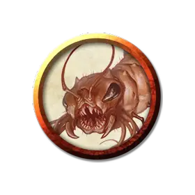

Личинка Адской осы
Hellwasp Grub
Маленький Зверь, без мировоззрения

Класс Доспеха 13 (природный доспех)
Хиты 4 (1к6 + 1)
Скорость 30 футов, лазая 30 футов
| мод | спас | ||
|---|---|---|---|
| СИЛ | 5 | −3 | −3 |
| ЛОВ | 14 | +2 | +2 |
| ТЕЛ | 12 | +1 | +1 |
| мод | спас | ||
|---|---|---|---|
| ИНТ | 1 | −5 | −5 |
| МДР | 7 | −2 | −2 |
| ХАР | 3 | −4 | −4 |
Чувства слепое зрение 30 футов, пассивное Восприятие 8
Опасность 1/4 (50 опыта)
Бонус мастерства +2
Действия
Укус. Рукопашная атака оружием: +4 к попаданию, досягаемость 5 футов, одно существо. Попадание: 4 (1к4 + 2) колющего урона, и цель должна преуспеть в спасброске Телосложения Сл 11, иначе получит 10 (3к6) урона ядом. Если урон ядом уменьшает хиты цели до 0, цель остается стабилизированной, но отравленной на 1 час, даже после восстановления хитов, и цель парализована, пока отравлена таким образом.